中学理科 物理分野（力・圧力） 図で確認・ミニテストで実力チェック
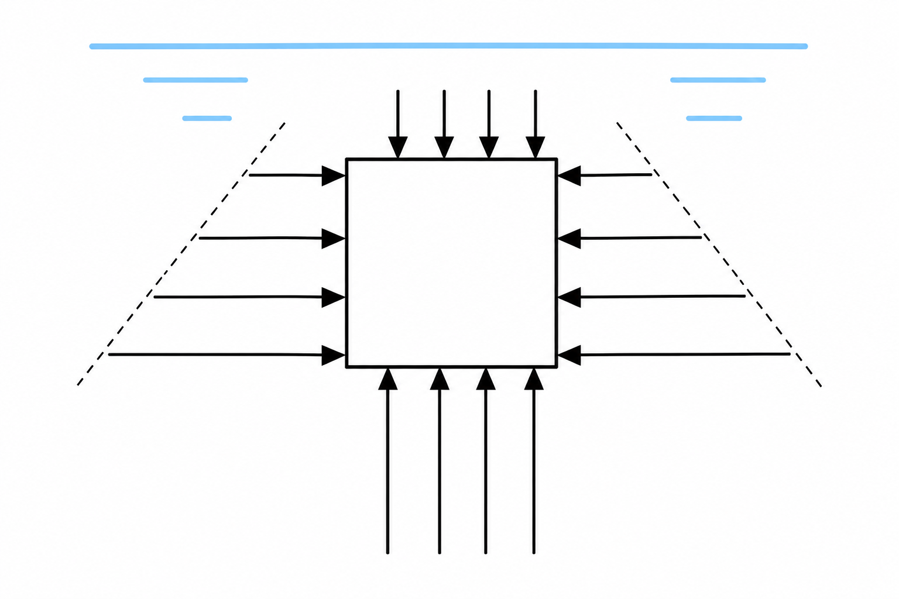
一辺10cmの立方体を、上面が水面下5cmになるように水中に入れると、立方体の上下左右のA〜D面には、それぞれの深さに応じた水圧がかかります。
左右の面にかかる水圧は、同じ深さであれば打ち消し合いますが、下面は上面より深い位置にあるため、下面が受ける上向きの水圧のほうが、上面が受ける下向きの水圧より大きくなります。この差し引きによって、物体全体には上向きの力がはたらきます。これが浮力です。
【アルキメデスの原理】浮力の大きさは、物体が水中に入っている部分の体積（＝おしのけた水の体積）にはたらく重力の大きさに等しくなります。浮力は物体がある深さには関係なく、水中にある体積だけで決まります。
物体の①面が受ける水圧より、より深い位置にある②面が受ける水圧のほうが大きいため、物体全体には上向きの③がはたらく。③の大きさは、物体がおしのけた④の重さに等しい。これを⑤の原理という。
アルキメデスの原理によれば、物体にはたらく浮力の大きさは、次のうちどれによって決まるか。
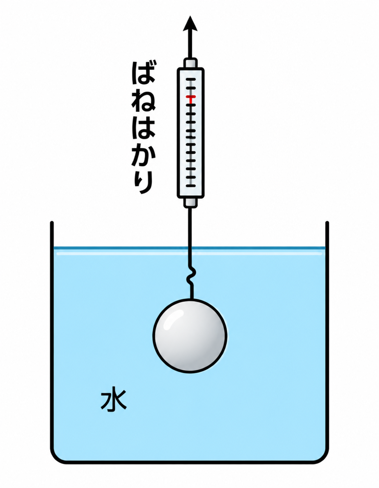
【例題2】体積100cm³、質量800gの物体を、図のようにばねはかりにつるして水中に完全に沈めた（水は1cm³あたり1g）。
(1) 浮力は何Nか。→ 浮力は、おしのけた水の質量に等しいので、物体の体積100cm³＝100gの水の重さ、すなわち1Nとなる。
(2) ばねはかりは何gを示すか。→ 物体の重さ800g（＝8N）から浮力の分（100g＝1N）を差し引けばよいので、8N－1N＝7N（＝700g）を示す。
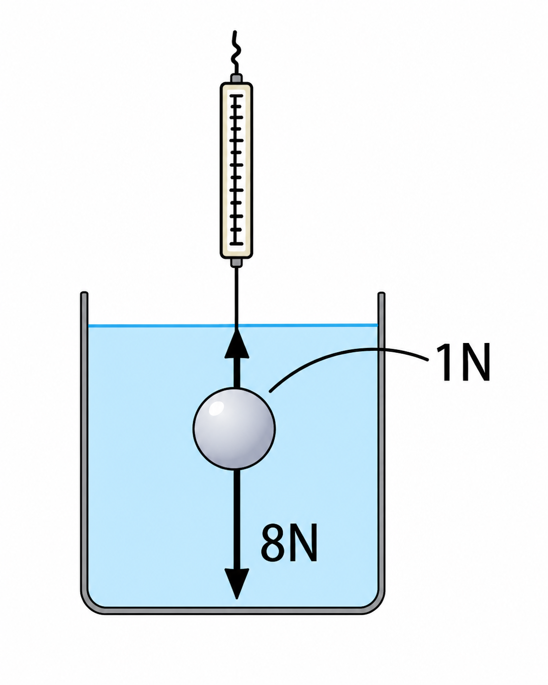
体積100cm³、質量800gの物体を水中に沈めると、おしのけた水は①cm³で重さは②gなので、浮力は③Nである。ばねはかりの示す値は、物体の重さ8Nから浮力③Nを引いて④Nとなる。
体積100cm³、質量800gの物体を、図のようにばねはかりにつるして水中に完全に沈めた（水は1cm³あたり1g）。このとき、ばねはかりは何gを示すか。
【群馬県入試・改】水中の直方体について考える。浅い位置にある側面a、深い位置にある側面bのうち、水圧が大きいのはbのほうである。また、下面が受ける圧力は上面より大きいため、物体は全体として上向きの力（浮力）を受ける。
【アルキメデスの原理の確認】水中に沈めた物体の体積が600cm³のとき、おしのけた水の重さは600gなので、浮力は6Nである（100gの物体にはたらく重力を1Nとする）。
【円柱の例】体積150cm³、質量600gの円柱を水中に完全に沈めた場合。
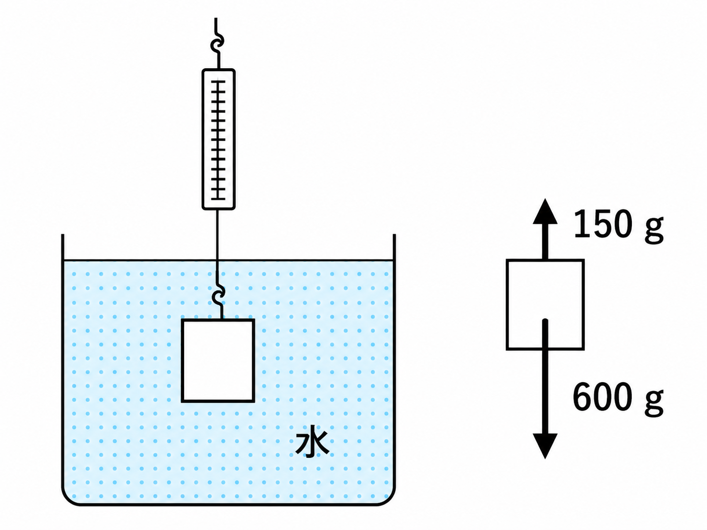
(1) 浮力は何Nか。→ おしのけた水150cm³＝150g＝1.5N。
(2) ばねはかりは何gを示すか。→ 図のように、円柱の重力600gから浮力にあたる150gを差し引いた600g－150g＝450g。
水中の直方体について、浅い位置にある側面aが受ける圧力は、深い位置にある側面bより①。下面が受ける圧力は上面より②。よって物体は全体として③に向かう力を受ける。これを④という。
アルキメデスの原理により、水中の体積が600cm³の物体にはたらく浮力は①Nである（100gの物体にはたらく重力を1Nとする）。
体積150cm³、質量600gの円柱を、図のように水中に完全に沈めた。このとき円柱にはたらく浮力は何Nか（100gの物体にはたらく重力を1Nとする）。
同じ円柱（質量600g）を図のように水中に完全に沈めたとき、ばねはかりは何gを示すか。
ある物体をばねはかりではかると750gを示し、水中に完全に入れると630gを示した。
(1) 浮力は何Nか。→ 750g－630g＝120g＝1.2N。
(2) 物体の体積は何cm³か。→ 浮力にあたる質量120g分の水の体積、すなわち120cm³が水中にある部分の体積である。
また、質量2kg・体積1500cm³の物体（100gの物体にはたらく重力を1Nとする）を水中に完全に沈めた場合、浮力は物体の水中体積1500cm³分の水の重さなので15Nとなり、ばねはかりは物体の重さ20N－浮力15N＝5N（500g相当）を示す。
ある物体をばねはかりではかると750gを示した。この物体を水中に完全に入れると、ばねはかりは630gを示した。このとき、物体にはたらく浮力の大きさは何Nか。
同じ物体（ばねはかりが750g→630gに変わったもの）について、水中に沈んでいる部分の体積は何cm³か。
質量2kg・体積1500cm³の物体を水中に完全に沈めると、浮力は①Nとなり、ばねはかりの値は物体の重さ20Nから浮力①Nを引いて②Nとなる（100gの物体にはたらく重力を1Nとする）。
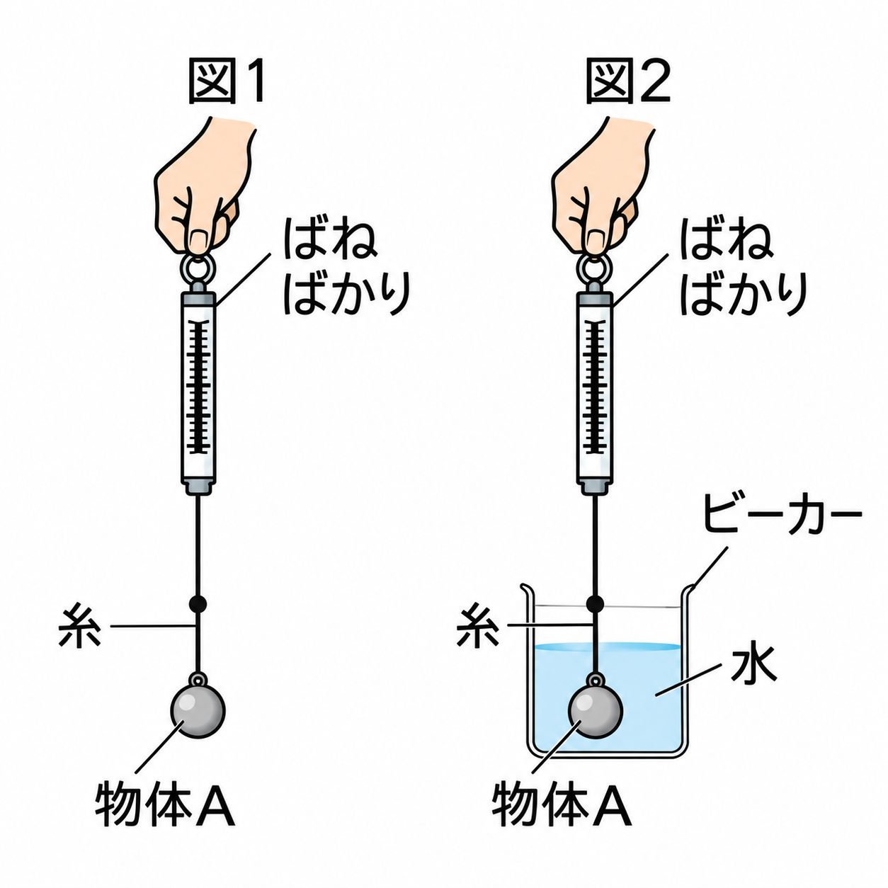
【長崎県入試・改】図1のように物体Aを空気中でばねばかりにつるすと、ばねばかりは1.0Nを示した。次に図2のように、物体Aをすべて水に入れると、ばねばかりは0.8Nを示した。
図2の状態で物体Aにはたらく浮力の大きさは、空気中の値から水中の値を引いて、1.0N－0.8N＝0.2Nである。
図1のように物体Aを空気中でばねばかりにつるすと1.0Nを示し、図2のように物体Aをすべて水に入れると0.8Nを示した。図2の状態で、物体Aにはたらく浮力の大きさは何Nか。
円柱を水中からばねはかりで引き上げていく実験で、横軸を円柱の移動距離(cm)、縦軸をばねはかりの目盛り(g)としてグラフをかいた（図参照）。
グラフは、P(0cm,14g)からQ(15cm,14g)まで一定、Q〜R(23cm,18g)まで直線的に増加、R以降のS(23cm〜)は18gで一定になっている。
0〜15cmの間は円柱が完全に水中に沈んだままなので浮力は変化せず、ばねはかりの値は14gで一定である。15〜23cmの間は円柱が水面から出はじめ、水中に残る体積が減るので浮力が減り、ばねはかりの値は増加する。23cm以降は完全に水から出たので、ばねはかりの値は真の重さ18gで一定になる。
・円柱の真の重さ（空気中の重さ）＝18g ・水中に完全に沈んでいるときの浮力に相当する重さ＝18g－14g＝4g ・円柱の高さ＝Rの位置－Qの位置＝23cm－15cm＝8cm
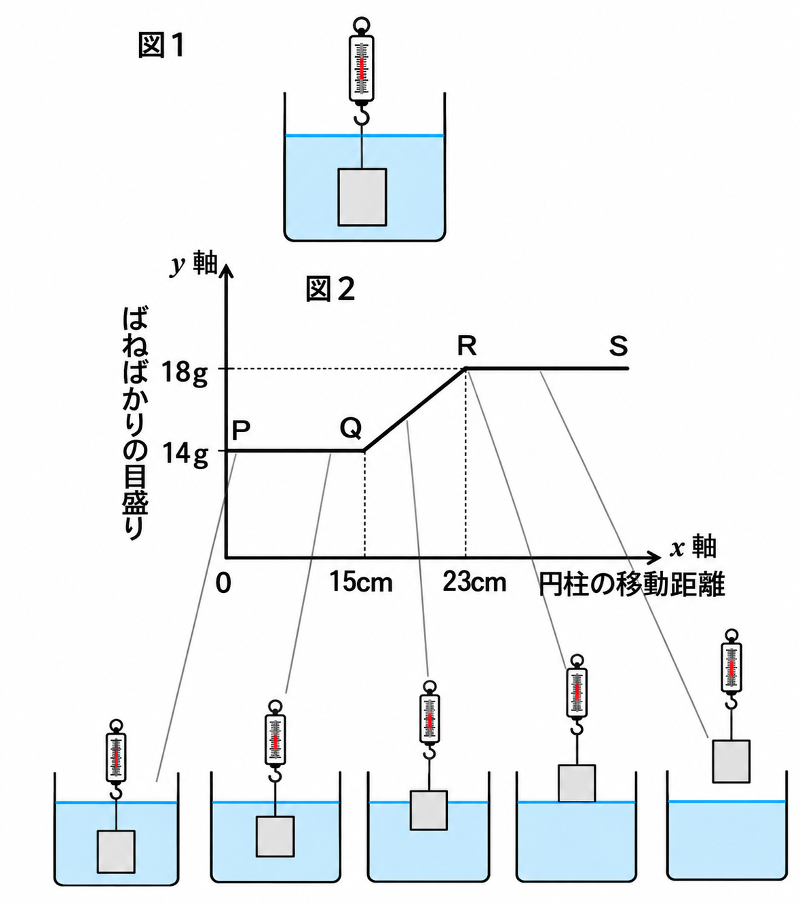
グラフより、円柱の真の重さは①gであり、水中に完全に沈んでいるときの浮力に相当する重さは②gである。円柱の高さは③cmである。
円柱を水中からばねはかりで引き上げていく実験で、円柱の移動距離が0〜15cm（グラフのP〜Q間）の間、ばねはかりの値が14gで一定になっているのはなぜか。
物体を水面から沈めていく実験で、横軸を水面から物体の下面までの距離(cm)、縦軸をばねはかりの値(N)としてグラフをかいた（図参照）。x=0のとき45N、x=15cmまで直線的に減少して30Nになり、x=15〜20cmは30Nで一定である。
x=0は物体の下面がちょうど水面にある状態（まだ沈んでいない）なので、ばねはかりは真の重さ45Nを示す。沈めていくと水中に入る体積が増えて浮力が増加するので、ばねはかりの値は減っていく。x=15cmで物体は完全に水中に沈み、それ以上沈めても浮力は変わらないので、ばねはかりの値は30Nで一定になる。
・物体の真の重さ＝45N ・完全に水中に沈んだときの浮力＝45N－30N＝15N ・物体の高さ＝15cm（完全に水面下に沈むまでの距離＝物体の高さに等しい）
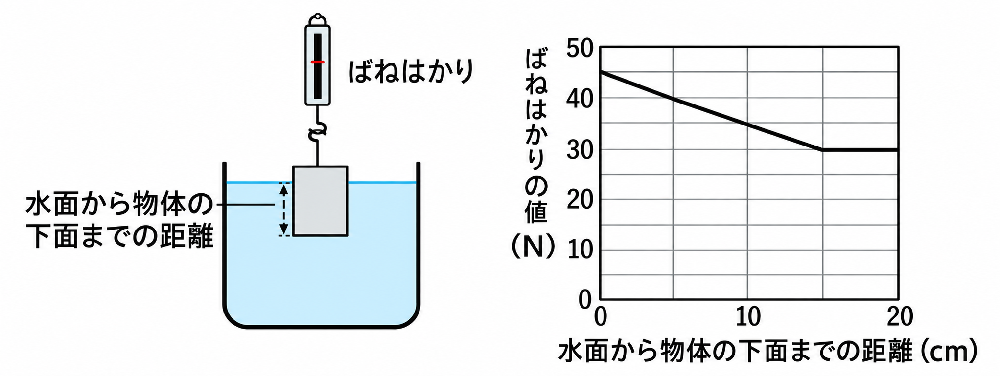
グラフより、物体の真の重さは①Nであり、完全に水中に沈んだときの浮力は②Nである。物体の高さは③cmである。
物体を水面から沈めていく実験で、物体の下面が水面から15cm沈んだ後（x=15〜20cm、物体が完全に水中に沈んだ後）、ばねはかりの値は何Nを示すか。
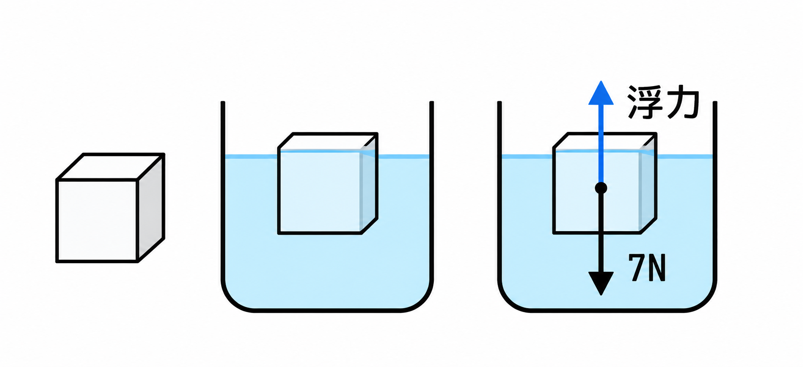
図のように、水に浮かんでいる物体には、上向きの浮力と下向きの重力（7N）がはたらいている。
物体は静止して水に浮いている、つまり力がつり合っているので、浮力の大きさは重力と等しく7Nである。
図のように、水に浮かんでいる物体には下向きの重力7Nがはたらいている。この物体が静止して水に浮いているとき、浮力の大きさは何Nか。
物体が水に浮いて静止しているとき、その物体にはたらく浮力と重力の関係として正しいものはどれか。
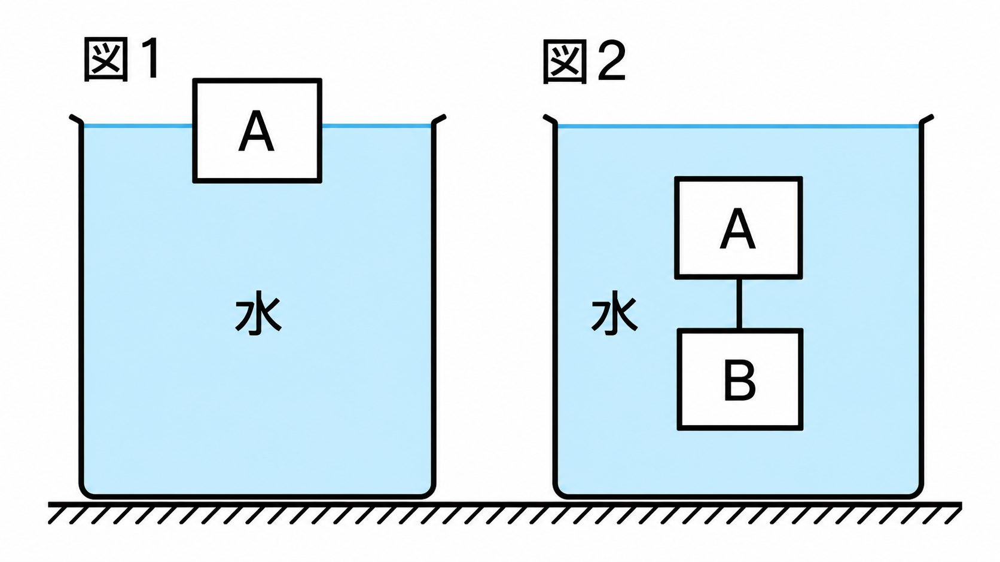
【問題】図1のように物体Aが単独で水面に浮いている。図2のように、物体Aの下に物体Bを糸でつなぎ、両方とも水中に沈めて静止させた（力がつり合っている）。このとき、物体Bの重力（重さ）は何Nか、求めなさい。
力の関係は図の通りで、Aの浮力＝1N、Aの重力＝0.5N、Bの浮力＝1N、Bの重力＝xNである。
物体Aについて：浮力1N（上）＝重力0.5N（下）＋糸がAを引く力T（下） よってT＝1N－0.5N＝0.5N
物体Bについて：浮力1N（上）＋糸がBを引く力T=0.5N（上、Aとの反作用）＝重力xN（下） よってx＝1N＋0.5N＝1.5N
したがって、Bの重さ（重力）は1.5Nである。
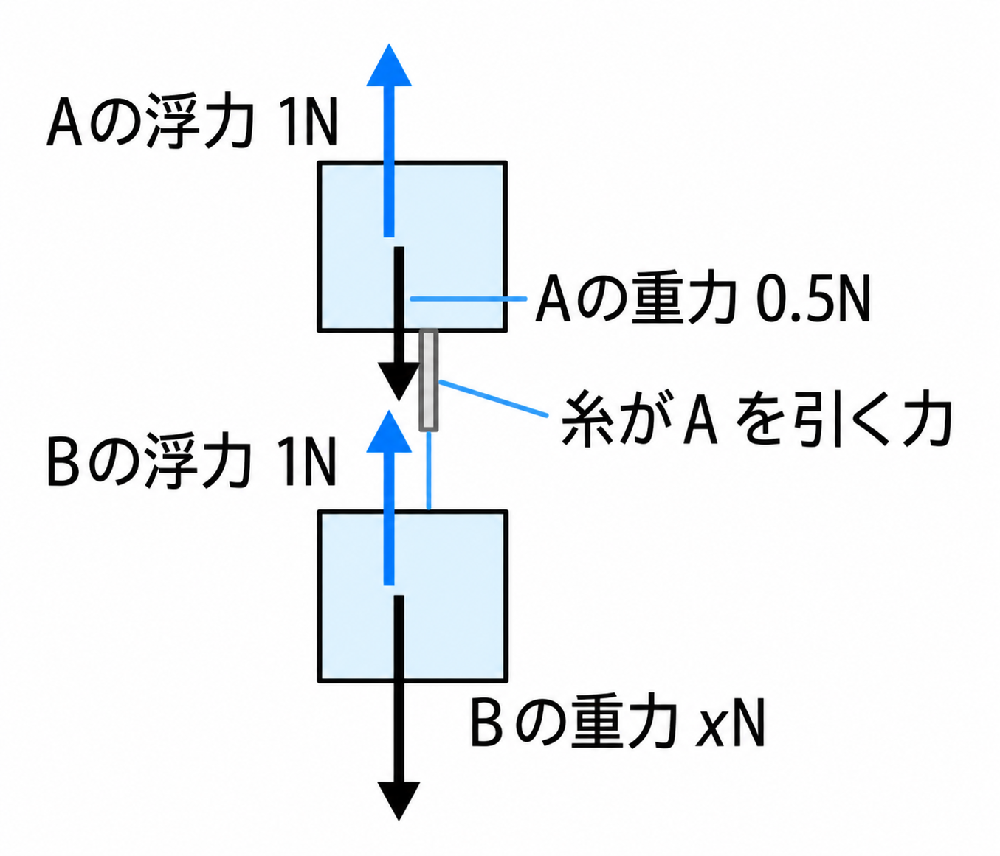
物体Aについて、浮力1N＝重力0.5N＋糸がAを引く力なので、糸がAを引く力は①Nである。物体Bについて、浮力1N＋糸がBを引く力①N＝Bの重力なので、Bの重力は②Nである。
物体Aと物体Bを糸でつないだ「A＋B」全体で考える。A＋B全体も水中で静止している（A・Bの浮力の合計＝1N＋1N＝2N、A・Bの重力の合計＝0.5N＋1.5N＝2N）。このとき、AとBをつなぐ糸の力は、A＋B全体の運動にはどう関係するか。
ここまで学んだ「浮力」について、応用問題で確認しましょう。
【テキスト23ページ・練習5】一辺10cmの立方体の木片（680g）の下に、糸で300g・体積100cm³のおもりを取り付けて、下の図のように水に浮かべた。木片は何cmだけ水中に沈んでいるか。ただし、糸の重さは考えないものとする。
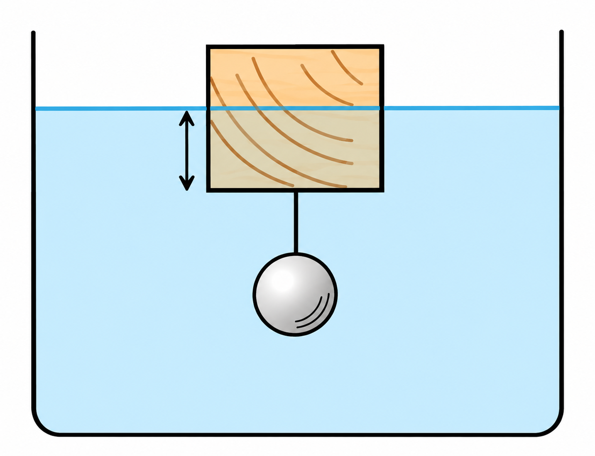
木片とおもりは糸でつながれた状態で全体が静止している（力がつり合っている）ので、次の関係が成り立つ。
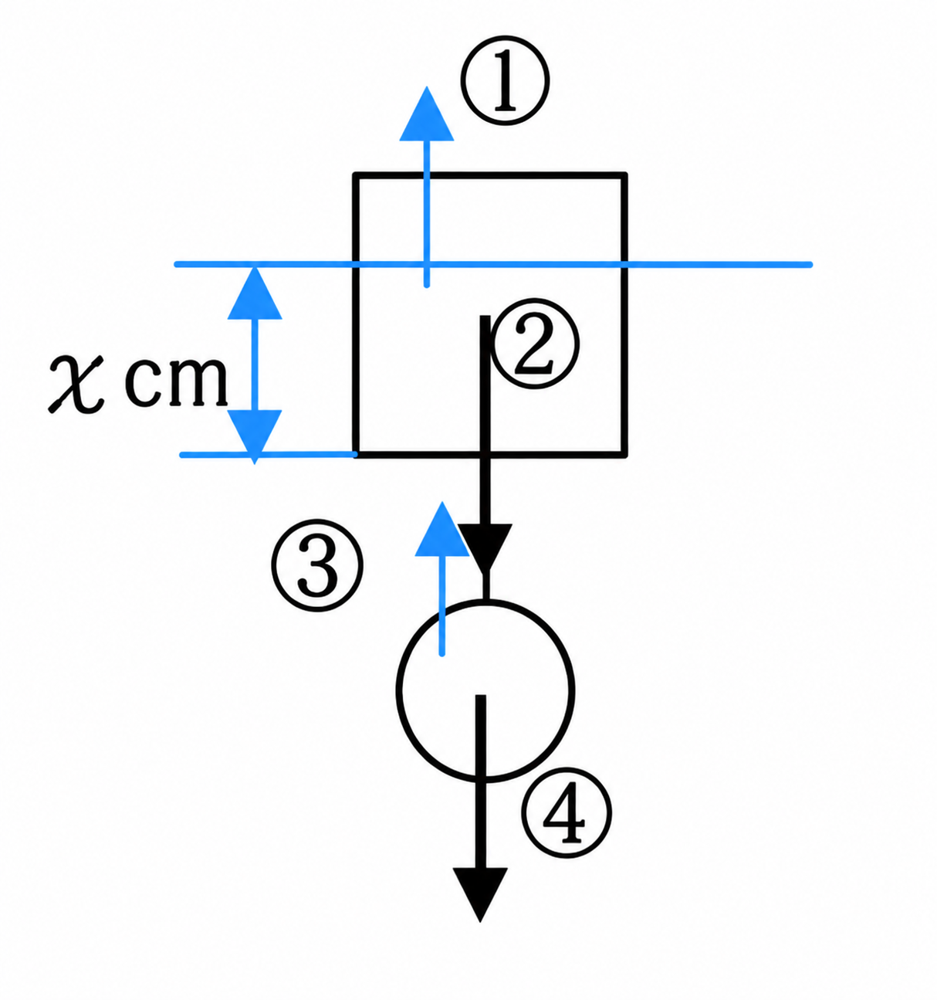
①木片の浮力＋③おもりの浮力＝②木片の重力＋④おもりの重力
おもりは完全に水中にあるので、おもりの浮力＝100cm³の水の重さ＝100g＝1N。おもりの重力＝300g＝3N。木片の重力＝680g＝6.8N。よって木片の浮力＝(6.8N＋3N)－1N＝8.8N。したがって、木片がおしのけた水の体積は880cm³。木片の底面積は10cm×10cm＝100cm²なので、沈んでいる深さ（図のxcm）＝880cm³÷100cm²＝8.8cmとなる。
一辺10cmの立方体の木片（680g）の下に、糸で300g・体積100cm³のおもりを取り付けて水に浮かべた（上の図）。このとき、おもりにはたらく浮力は何Nか。
同じく、木片の下につけたおもり（300g）にはたらく重力は何Nか（100gの物体にはたらく重力を1Nとする）。
木片（680g）の重力は①Nである。木片とおもりの全体でつり合っているので、木片の浮力は(①N＋3N)－1N＝②Nとなる。よって木片がおしのけた水の体積は③cm³である。
木片がおしのけた水の体積が880cm³、木片の底面積が100cm²であるとき、木片が水中に沈んでいる深さ（図のxcm）は何cmか。